Aktuálna ponuka
Nehnuteľnosti, ktoré ponúkam
12 nehnuteľností na predaj a prenájom. Vyberte typ, alebo napíšte lokalitu.
12 z 12 ponúk
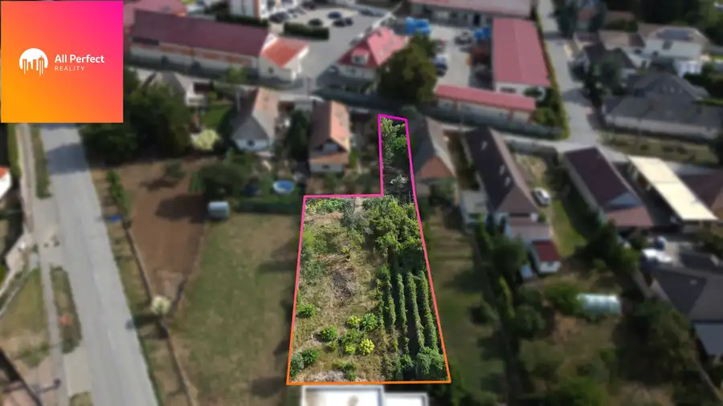
PozemokNové3 84 700 €ALL PERFECT | Na predaj veľký stavebný pozemok v Pate s rozlohou 830 m² Pata 730 m² All Perfect Reality Vám ponúka na predaj stavebný pozemok o výmere 830 m² vo vyhľadávanej lokalite v centre obci Pata, ktorý je ideálny pre výstavbu…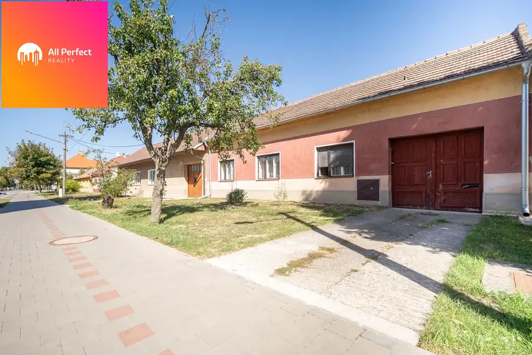
DomNové10 172 900 €ALL PERFECT | 5-izbový rodinný dom na pozemku 1 019 m² v centre Cífera Cífer 110 m² All Perfect Reality Vám ponúkajú na predaj rodinný dom v centre obce Cífer, ktorý zaujme predovšetkým svojou skvelou polohou. Nachádza sa v tichej…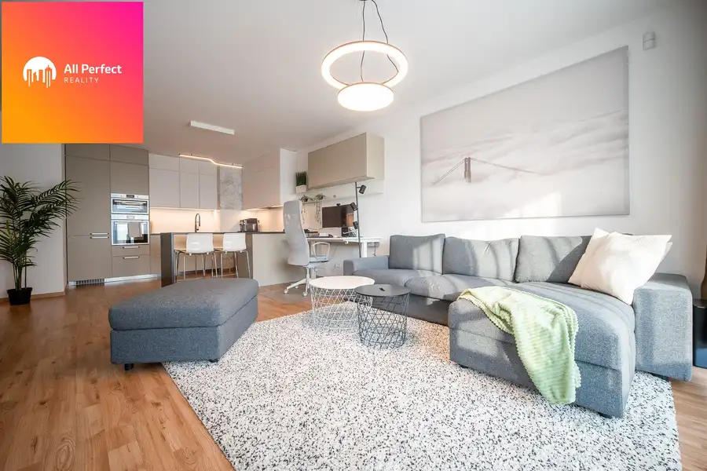
Byt10 165 200 €|ALL PERFECT| 2-izbový byt v novostavbe Piešťany – Banka | ideálne bývanie aj investícia Banka 2-izbový58 m²1. podlažie All Perfect Reality ponúka na predaj 2-izbový byt v novostavbe v Piešťanoch, časť Banka, ktorá je dlhodobo obľúbená pre pokojné bývanie v blízkosti…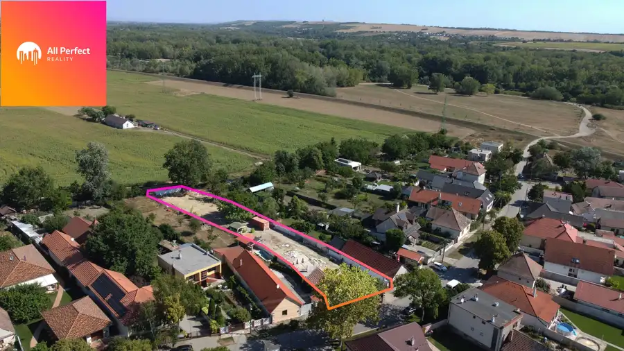
Pozemok10 169 900 €ALL PERFECT | Stavebný pozemok 1 587 m² v Seredi – pokojná lokalita pri hrádzi s projektom rodinného domu Sereď 1587 m² All Perfect Reality Vám ponúkajú na predaj výnimočný stavebný pozemok na Vážskej ulici v Seredi, ktorý ponúka ideálne miesto pre výstavbu rodinného…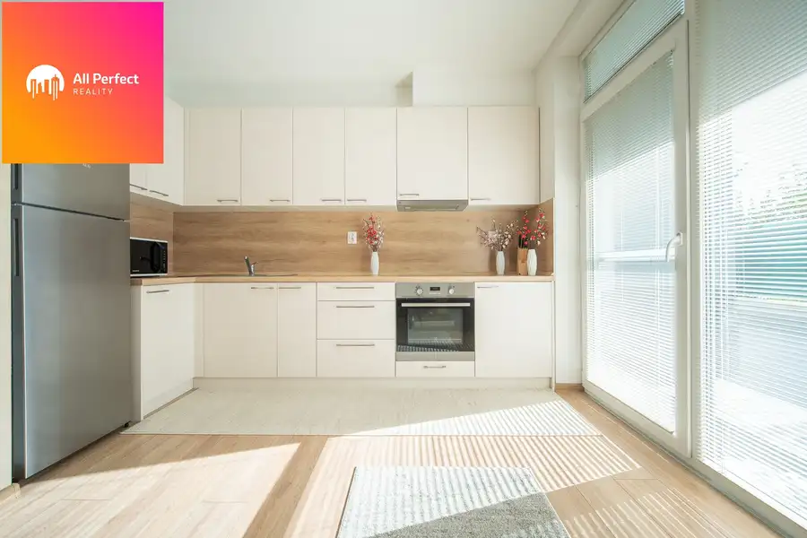
Byt10 193 500 €All Perfect | Na predaj 3-izbový byt s terasou v novostavbe v Seredi Sereď 3-izbový84 m²1. podlažie All Perfect Reality Vám pripravili na predaj krásny 3-izbový byt s veľkou terasou v novostavbe v obľúbenej časti Meander v Seredi, ktorý spája…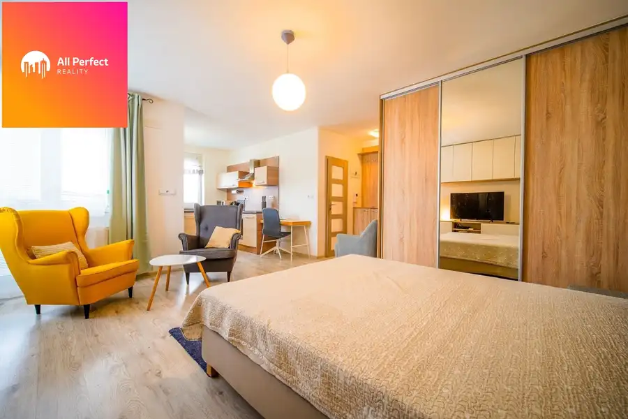
Byt9 104 200 €|ALL PERFECT| Moderný 1-izbový byt v novostavbe v atraktívnej lokalite Piešťany – Banka Banka 1-izbový38 m²1. podlažie All Perfect Reality ponúka na predaj 1-izbový byt v novostavbe v Piešťanoch, v obľúbenej časti Banka, ktorá patrí medzi vyhľadávané lokality najmä…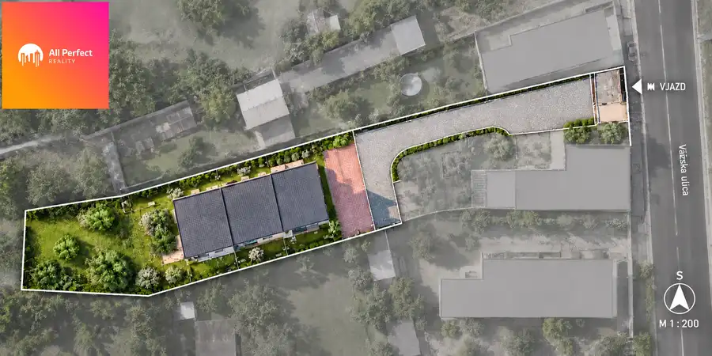
Pozemok5 99 900 €All Perfect | Pozemok s výmerou 802 m² v Seredi Sereď 802 m² All Perfect Reality Vám ponúka na predaj priestranný stavebný pozemok na Vážskej ulici v Seredi s výmerou 802 m², ktorý ponúka zaujímavé možnosti pre…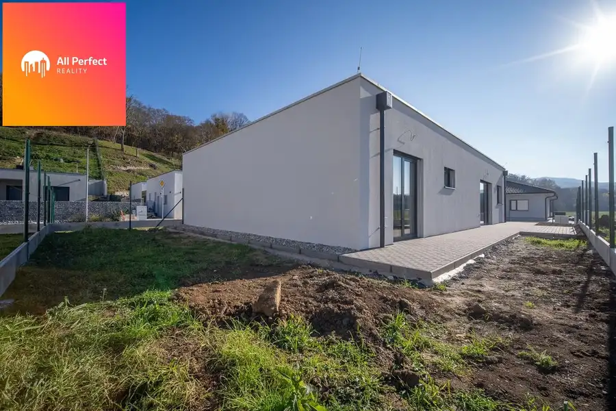
Dom10 329 600 €ALL PERFECT| Na predaj moderná novostavba rodinného domu Moravany nad Váhom Moravany nad Váhom 137 m² All Perfect Reality ponúka na predaj priestranný a poctivo postavený 4-izbový rodinný dom s úžitkovou plochou 137 m² na rovinatom pozemku s výmerou…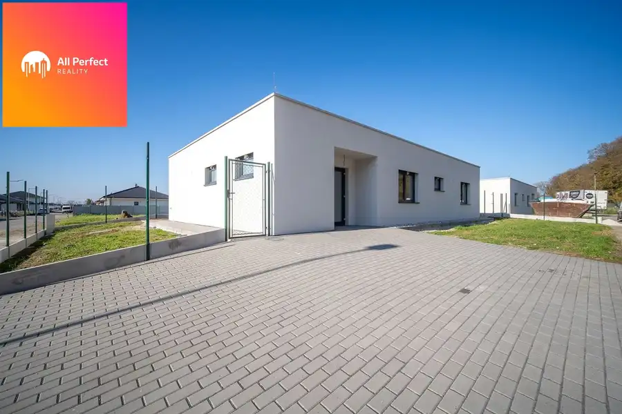
Dom10 293 550 €ALL PERFECT| Na predaj 5 izbová novostavba rodinného domu Moravany nad Váhom Moravany nad Váhom 137 m² All Perfect Reality prináša na predaj moderný 5-izbový rodinný dom s úžitkovou plochou 137 m², ktorý je súčasťou pokojnej a vyhľadávanej štvrte… Dom10
187 600 €ALL PERFECT| Na predaj zrekonštruovaný 4 izbový rodinný dom v Šintave
Šintava
69 m²
All Perfect Reality ponúka na predaj zrekonštruovaný 4-izbový rodinný dom v tichej lokalite obce Šintava, časť Nové Domy. Táto nehnuteľnosť je…
Dom10
187 600 €ALL PERFECT| Na predaj zrekonštruovaný 4 izbový rodinný dom v Šintave
Šintava
69 m²
All Perfect Reality ponúka na predaj zrekonštruovaný 4-izbový rodinný dom v tichej lokalite obce Šintava, časť Nové Domy. Táto nehnuteľnosť je…
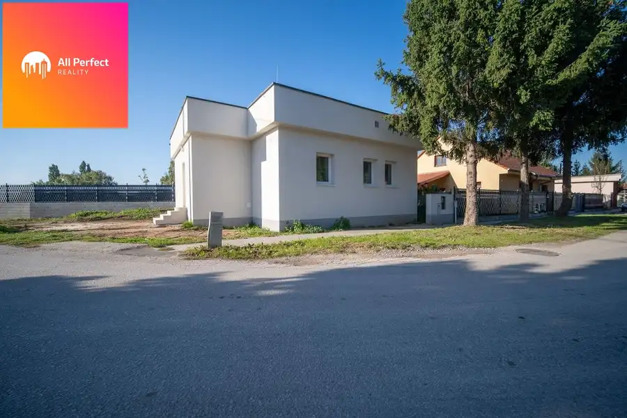
Dom10 187 600 €ALL PERFECT| Na predaj zrekonštruovaný 4 izbový rodinný dom v Šintave Sereď 69 m² All Perfect Reality ponúka na predaj zrekonštruovaný 4-izbový rodinný dom v tichej lokalite obce Šintava, časť Nové Domy. Táto nehnuteľnosť je…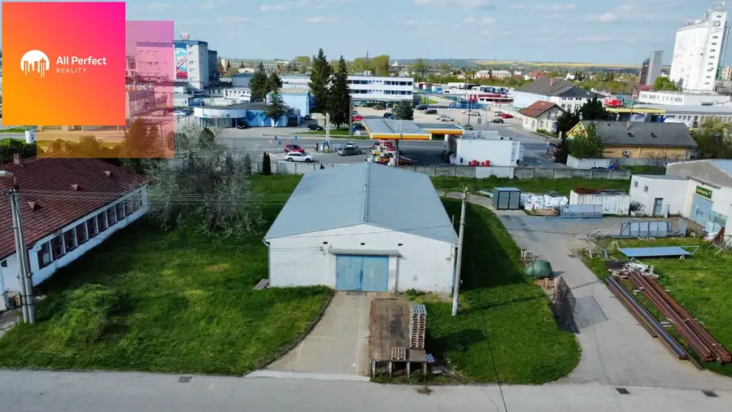
Komerčné priestoryNové10 Cena dohodouSkladové priestory na prenájom|162 m2|Sereď| Sereď 162 m² Exkluzívne iba u nás! All Perfect Reality Vám pripravili na prenájom priestranné skladové priestory, ktoré sa nachádzajú na ulici Trnavská cesta s…Tomuto výberu zatiaľ nezodpovedá žiadna ponuka. Napíšte mi, čo hľadáte.